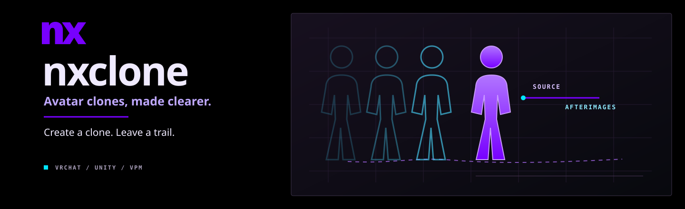

Check first.
Check rigs and parameter space. Missing FX and expression assets are created; full menus wrap automatically.
NX · VRChat avatar tools
Build a scene copy, add a clone, and leave translucent afterimages. See avatar requirements before you generate.

Preview release · 0.3.0
Check rigs and parameter space. Missing FX and expression assets are created; full menus wrap automatically.
Configure four clones, world drop, pose freeze, recording, limb posing, IK, contacts and wearing. Choose independent FX and gesture commands.
Add flat single-color silhouettes with an independent toggle. The primary avatar stays in front. Constraint feedback creates frame-rate-dependent delay.
VPM install
Add the nxclone repository in ALCOM or Creator Companion, then add nxclone to your avatar project.
https://nerdrx.github.io/nxclone/index.jsonThe VCC button needs a registered vcc:// handler. On Linux, paste the URL into your VPM-compatible manager.
Preview status: Linux SDK preprocessing and Animator toggle tests passed on a real avatar; offscreen rendering checked flat silhouettes. Live VRChat and Windows editor tests remain open. Updating? Regenerate from your original avatar.